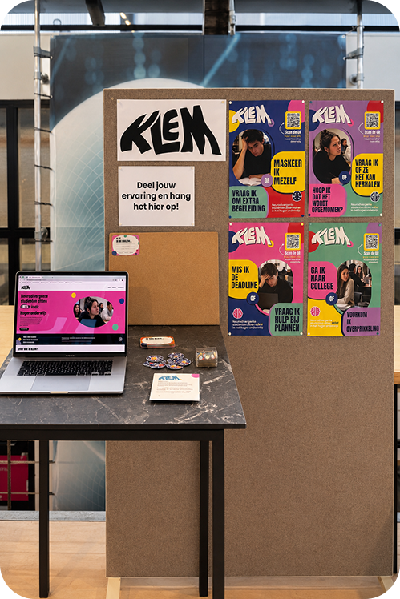
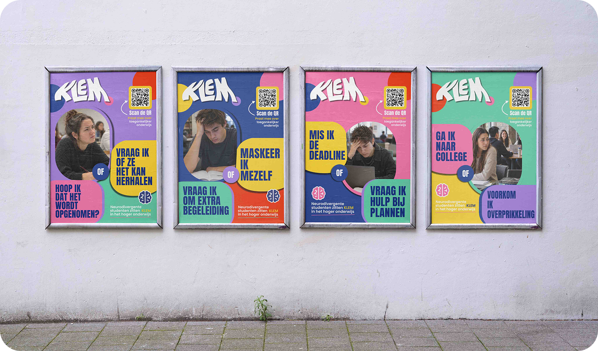
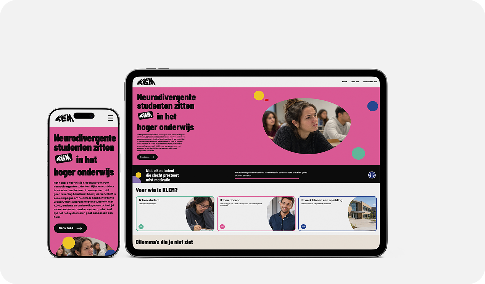
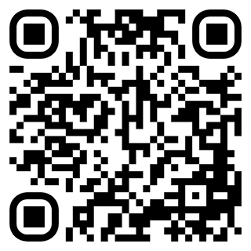

Back to projects
Back to projects
KLEM - graphic design & UX/UI design
“How can design reveal the gap between the neurodivergent mind and a world designed for neurotypical people within higher education?”
KLEM is a campaign about neurodivergent students in higher education. By making their challenges visible, KLEM aims to start a conversation about how education can become more accessible to students with different learning styles and needs.
KLEM represents the feeling many neurodivergent students experience: constantly having to choose between two things that are equally important: their well-being and their studies. They feel caught between what they need and what the education system expects of them.
The campaign consists of a series of posters that highlight different dilemmas faced by neurodivergent students. These posters will be displayed at universities and universities of applied sciences throughout the Netherlands. The campaign also includes a website where visitors can learn more about KLEM and find resources and practical information on how they can help make education more accessible.

Poster campaign

Website

Scan the QR code to visit the website or click on this text
